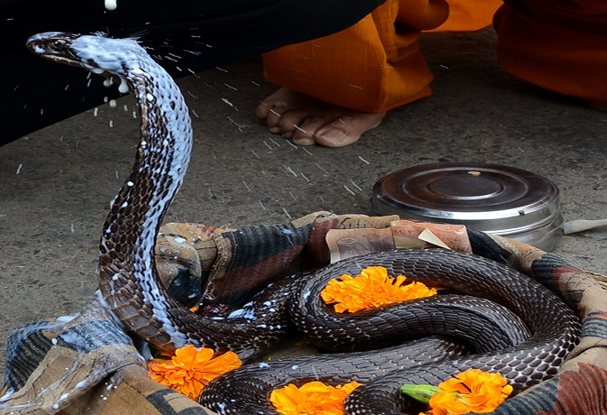
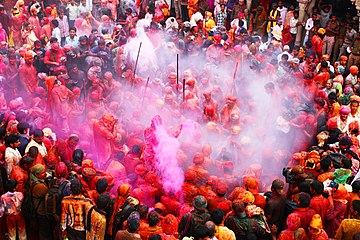

Here are some of the customs and traditions of India:
The Aghori sadhus of Varanasi
The Aghori sadhus are wondering monks who renounce all earthly possessions in order to attain eternal spiritual liberation. These ascetic Shaiva sadhus engage in post-mortem rituals such as meditating on corpses, cannibalism, keeping skulls as reminders of the impermanence of life, and smearing their bodies with ash, which is the last rite performed on a material body. Another vital ritual is a dip in the Ganges before sunrise, to cleanse themselves of all sins.
The Hola Mohalla warriors of Punjab
Founded by Guru Gobind Singh, the tenth Guru of Sikhism, Hola Mohalla is a three-day event that usually falls in March, one day after the festival of Holi. It marks the beginning of the Sikh New Year and is held in the small town of Anandpur Sahib in Punjab, turning it into a rambunctious carnival setting. It showcases the fierce martial arts of Nihang Sikhs, as well as kirtan (religious chants), music and poetry, and ends with a glorious military-style procession.
The Buddhist chanting of Ladakh
In 2012, the Buddhist chanting of Ladakh was added to UNESCO’s list of Intangible Cultural Heritage of Humanity. The tradition of Buddhist chanting is celebrated every day in monasteries and villages in Ladakh. Buddhist lamas (priests) chant and recite the teachings and philosophy of Lord Buddha for the spiritual and moral well-being of believers. The ritual is carried out in groups—monks don traditional attire and make use of bells, drums, cymbals, and trumpets.
Chhau dance of Odisha
Another important tradition from India that made it to UNESCO’s list of Intangible Cultural Heritage of Humanity in 2010 is the classical Chhau dance, from Odisha. The dance is used as a form of storytelling on stage, using vivacious all-male troupes. It combines martial arts, acrobatics, athletics and its motifs highlight religious themes of Shaivism, Shaktism, and Vaishnavism. This folk dance is egalitarian and is celebrated every spring.
A festival to worship snakes: Nag Panchami

In Hindu culture, serpent blessings are sought to bring peace and welfare to the family. The festival usually falls during the months of July and August. Several stories about its significance have been narrated in different mythologies and folklore, including in the Mahabharata, the Sanskrit epic. On this day, serpent deities made out of silver, wood or stone are worshipped with offerings of milk, sweets and flowers, and sometimes a real snake is used. It is also considered a taboo to dig the earth on Nag Panchami as it could harm the snakes.
Ambubachi Mela, the tantric fertility festival of Assam
During the monsoon season in the middle of June, Ambubachi Hindu Mela (festival) is celebrated annually in the honour of Devi Kamakhya at the Kamakhya Temple in Guwahati, Assam. The festival celebrates yearly menstrual cycle of Devi Kamakhya aka the Mother of Shakti (power), who represents the nurturing power of a fertile land. The temple is closed for three days during the festival, as it is believed that Mother Earth becomes unclean during her period. Post its purification, the temple is re-opened, Kamakhya is bathed and Prasad is offered. Since there is no idol of Devi Kamakhya, a yoni-shaped stone is cleaned with water and covered in red cloth.
Lathmar Holi of Uttar Pradesh

Translating as “hitting with sticks,’’ the festival is celebrated before Holi in the neighbouring towns of Nandgaon and Barsana near Mathura. This distinct style of Holi celebration is limited to these towns because of a legend. According to the legend, Lord Krishna of Nandgaon visited his beloved Radha in Barsana on this day and the women playfully chased him away using lathis (long staves). The celebratory gesture is reciprocated the next day, by the men of Barsana invading the town of Nandgaon.
Wazwan, the royal cuisine of Kashmir
Many have called Kashmir heaven on earth, but only those who have visited know that there’s so much more to the region than otherworldly valleys and pashmina shawls. Wazwan is less a cuisine and more a tradition among Kashmiris. It is art served on a traem (platter) that involves a 36-course meal. The dishes are cooked overnight under the supervision of a master chef, a vaste waze. Guests sit in the group of four and share from one traem. Kashmiri Muslims invoke the name of Allah before feasting, whereas Kashmiri Brahmins pray to Lord Rudra.
Kumbh Mela

The Kumbh Mela (fair) is the world’s largest congregation of religious pilgrims. It rotates between these four pilgrimage destinations in a 12-year cycle: Haridwar, Allahabad, Nashik, and Ujjain. The last Kumbh Mela was held at Ujjain in 2016 and the next one will happen in 2022 at Haridwar. The main devotees are the Naga sadhus. Their solitary and extremely harsh lifestyle revolves around a monastic way of living. The significance of the fair for Hindus is to cleanse their sins by bathing in sacred waters.